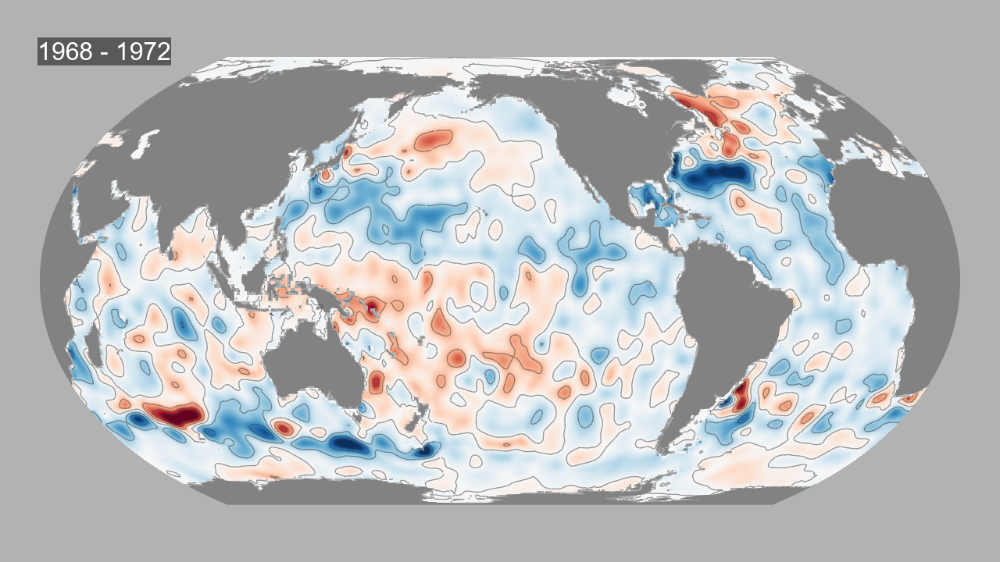
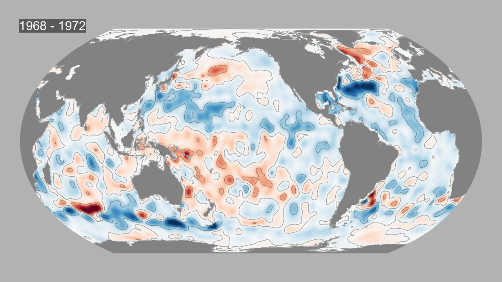

Потепление мирового океана (1955-2016)
Визуализация изменения теплосодержания верхних слоев океана (0-2000 метров)
по данным спутниковых наблюдений NASA и NOAA
по данным спутниковых наблюдений NASA и NOAA


 



Ключевые факты о потеплении океана:
• 1955-2016: Мировой океан поглощает более 90% избыточного тепла от глобального потепления
• Скорость потепления: Океан нагревается со скоростью 0.58 ± 0.08 Вт/м² (1955-2010)
• Рекордный год: В 2016 году зафиксировано теплосодержание - 0.58 ×10²² Дж
• Последствия: Повышение уровня моря, усиление ураганов, гибель коралловых рифов
Данные: NASA Earth Observatory, NOAA (Национальное управление океанических и атмосферных исследований)